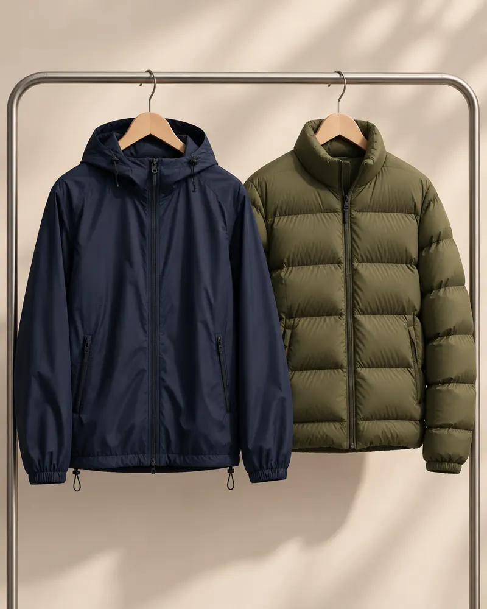
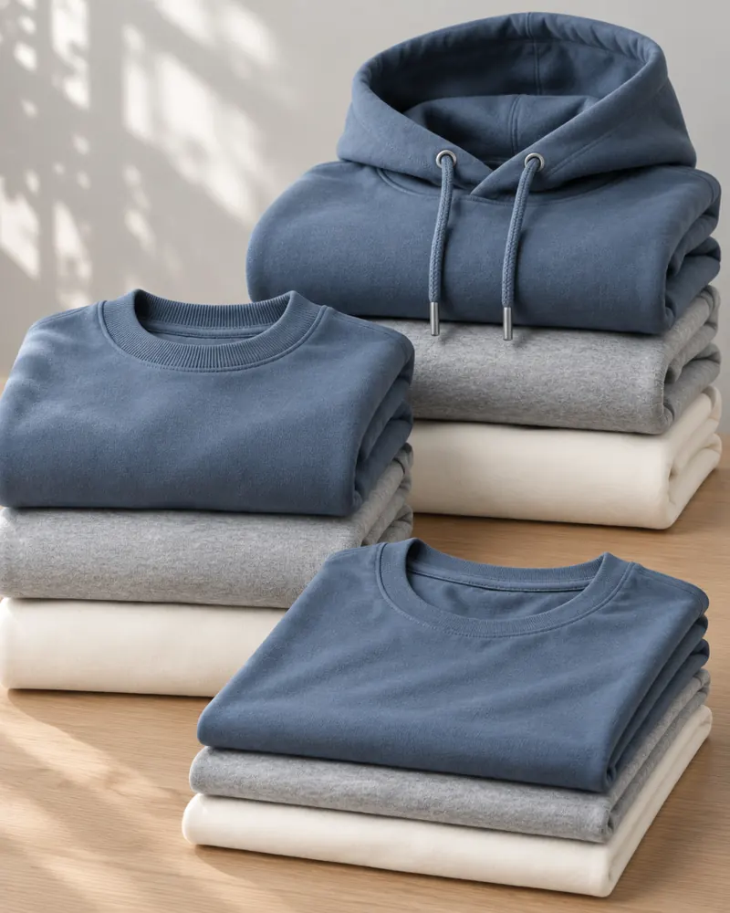
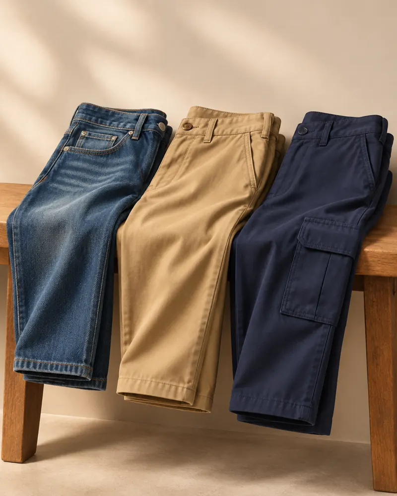
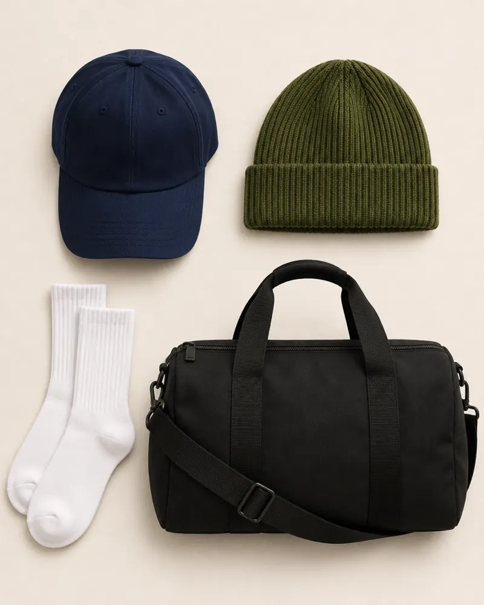
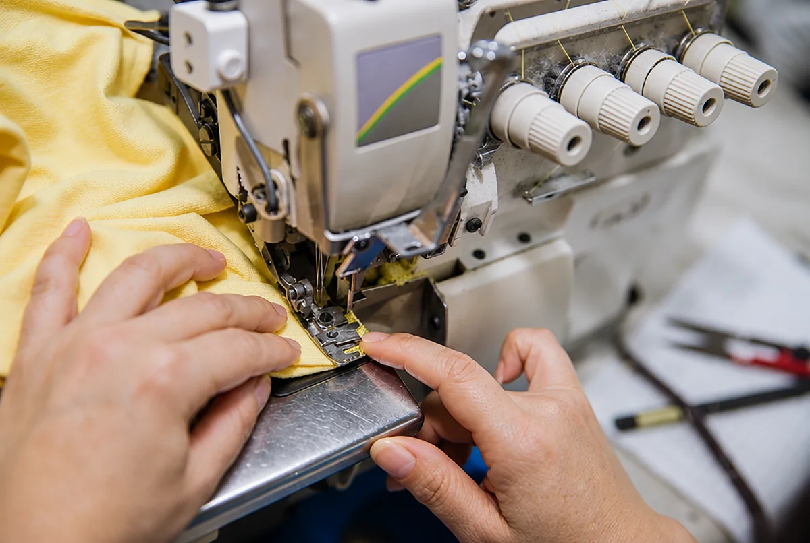
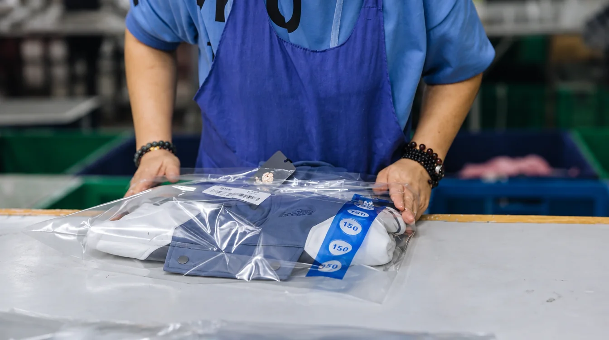
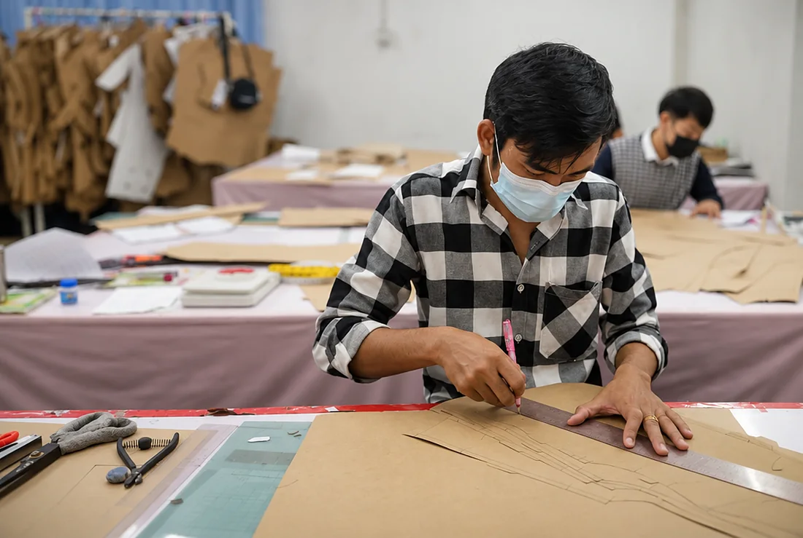
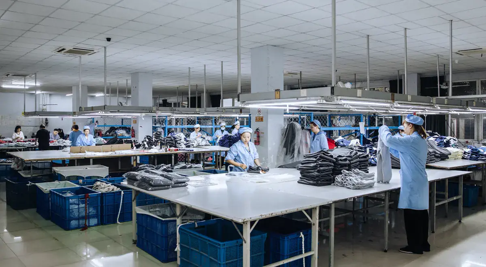

WOVEN우븐 · 아우터 · 9개 품목
- 자켓
- 윈드브레이커
- 다운 점퍼
- 가죽 자켓
- 무스탕
- 데님 자켓
- 블라우스
- 원피스
- 스커트
CAPABILITY
무엇을, 어떻게, 어디서 만드는지 — BSF의 생산역량을 한 페이지에 담았습니다.
WHAT WE MAKE
여기 없는 품목도 문의해 주세요. 맞는 공장을 찾는 것이 BSF의 일입니다.




SOURCING STRATEGY
같은 자켓이라도 소량 고난도 오더와 대량 기본 오더는 다른 공장에서 만들어야 합니다. BSF는 오더의 난이도와 수량을 보고 가장 맞는 생산지를 고릅니다.
HOW WE WORK

스케치 · 레퍼런스 · 작업지시서, 어떤 형태든 괜찮습니다.

패턴을 뜨고 샘플을 만들어 핏과 디테일을 맞춥니다.

원단 · 부자재를 찾아 원가와 품질에 맞게 제안합니다.

원부자재와 생산지 조합별 원가를 비교해 정합니다.

현지 상주 관리자가 공정마다 확인하고 검품합니다.

검침 · 포장 후 약속한 날짜에 입고합니다.
BSF는 바이어와 원가 스터디를 통해 원부자재를 최적으로 설계하며, 다양한 생산지 루트를 제안하고 공정별 투명한 관리를 통해 고객이 원하는 원가와 납기, 고품질의 제품을 제공합니다.
WHO DOES WHAT
| 단계 | 바이어가 주실 것 | BSF가 하는 일 |
|---|---|---|
| DESIGN디자인 의뢰 | 스케치 · 레퍼런스 사진 · 작업지시서 · 목표 단가와 수량 | 어떤 형태든 받아 생산 가능한 사양으로 정리 |
| SAMPLE패턴 · 샘플 | 핏 · 디테일 피드백 | 패턴 제작, 1차 샘플 → 수정 샘플 |
| MATERIAL원부자재 | 원하는 소재감 · 컬러 | 원단 · 지퍼 · 단추 · 라벨 · 포장재 소싱과 제안 (스와치 제공) |
| COSTING원가 · 생산지 | 목표 단가 · 납기 확인 | 원부자재 × 생산지 조합별 원가 시뮬레이션, 최적 루트 제안 |
| PRODUCTION생산 · 품질관리 | 생산 승인(PP 샘플) | 현지 상주 관리자의 공정 관리 · 중간 검품 · 검침 |
| DELIVERY입고 | 입고지 · 일정 | 포장 · 선적 · 통관 · 입고 일정 관리 |
GLOBAL SOURCING INFRA
품목마다 잘하는 공장이 다릅니다. BSF는 우븐 · 니트 · 데님 · 아우터 · 모자 · 원단까지 검증된 생산지를 연결합니다.
PARTNER FACTORIES
BSF와 오래 함께해 온 대표 협력 공장입니다. 글로벌 브랜드를 만들어 온 설비와 인력이 BSF의 오더를 만듭니다.
중국 저장성 닝보 · 니트 전문 · 2003년 설립
20년 넘게 니트 의류만 만들어 온 공장입니다. adidas · Disney 공장 인증을 받았고, 2006년부터 해마다 WRAP 골드 인증을 유지하고 있습니다.



미얀마 양곤 공업단지 · 아우터 전문 · 2018년 설립
다운 자켓 · 레인 자켓 · 스노 자켓 · 코트 같은 아우터를 대량으로 만드는, 한국인 관리진이 운영하는 공장입니다. 11개 라인, 1,150명이 일합니다.



중국 장쑤성 양저우 · 모자 전문
볼캡 · 니트 모자 · 버킷햇 · 베레모까지 원단 모자 전 품목을 만듭니다. 자동 재단기와 자수실, 검침 · 성형 라인을 갖췄습니다.


QUALITY CONTROL
자동 재단부터 검품 · 검침 · 포장까지, 현지 상주 관리자가 직접 확인합니다.

FAQ
품목과 생산지에 따라 다릅니다. 같은 품목이라도 소량 · 고난도는 중국, 대량은 미얀마 · 베트남처럼 맞는 공장을 고르기 때문에 수량에 맞춰 제안드릴 수 있습니다. 예상 수량을 알려 주세요.
네. 스케치나 레퍼런스 사진만 있어도 패턴 · 샘플 개발부터 함께 진행합니다. 작업지시서가 있으면 더 빠릅니다.
네. 상하이 · 항저우 · 광저우 네트워크를 통해 원단과 부자재만 따로 소싱해 공급합니다.
품목과 난이도에 따라 다르며, 문의를 주시면 품목별 샘플 · 본생산 일정을 함께 안내드립니다.
네. 선적 · 통관 · 지정 창고 입고까지 일정에 맞춰 관리합니다.
품목 · 수량 · 납기만 알려 주시면, 맞는 생산지와 원가를 제안드립니다.